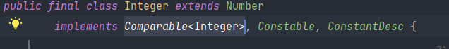
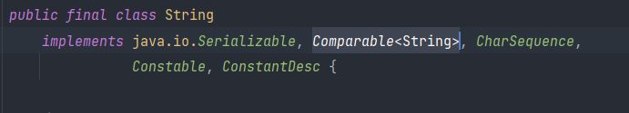

자바에서의 정렬
순서화가 가능한 자료구조를 정렬하는 방법에는 삽입정렬,버블정렬,분할정렬,퀵정렬 등 잘알려진 정렬 외에도 정말 많이 존재하는데 지금은 이러한 정렬의 알고리즘이 아닌 이미 자바 라이브러리에서 제공하는 자료구조들을 쉽게 정렬하는 방법을 정리하고자 한다.
자바에서의 크기를 비교할 수 있는 객체들은 모두 Comparable을 implements하여 compareTo를 구현하여 두 값중 어떤 것이 더 큰 값인지 알 수 있게끔 명시하고 있다.


Sort 방법
◾ Arrays.sort()
int[] intArr = {4, 5, 1, 6, 3, 8};
String[] strArr = {"A","a", "b", "aA", "ab" };
Arrays.sort(intArr);
Arrays.sort(strArr);
System.out.println(Arrays.toString(intArr)); // [1, 3, 4, 5, 6, 8]
System.out.println(Arrays.toString(strArr)); // [A, a, aA, ab, b]
배열들을 정렬하는 메서드로 각 클래스에 정의된 compareTo()를 기준으로 정렬을 수행하고 내부 코드를 들여다보면 int/char/double…와 같은 원시타입의 배열은 dual pivot quick정렬을 사용하고 있고 Object형은 레거시로 merge sort, 자바 7이후부터는 TimSort를 사용하고 있다.
 배열을 정렬하는 메서드이기 때문에 Arrays.sort()로 List와 같은 Collection을 정렬하려고 하면 에러가 난다.
배열을 정렬하는 메서드이기 때문에 Arrays.sort()로 List와 같은 Collection을 정렬하려고 하면 에러가 난다.
◾ Collections.sort()
Arrays.sort()로는 정렬을 하지 못했던 자료구조들을 정렬하기 위해 대부분의 자료구조의 조상인 Collections에 sort가 구현되어 있다.
List<Integer> intList = new ArrayList<>(); intList.add(4); intList.add(5); intList.add(1);
List<String> strList = new ArrayList<>();strList.add("Aa"); strList.add("AA"); strList.add("AZ"); strList.add("z");
Collections.sort(intList);
Collections.sort(strList);
System.out.println(intList); //[1, 4, 5]
System.out.println(strList); //[AA, AZ, Aa, z]
Collections.sort는 내부에 List.sort()를 수행하도록 되어있고 List.sort()는 결국 List를 배열로 바꾸어 Arrays.sort()를 수행해 List로 다시 바꿔 반환하는 방법으로 수행하게 된다. Arrays.sort()에 Object형을 정렬하기 때문에 TimSort로 정렬하게 된다.
intList.sort(null);
strList.sort(null);
System.out.println(intList); //[1, 4, 5]
System.out.println(strList); //[AA, AZ, Aa, z]
Collections.sort()가 결국 List.sort()를 수행하기 때문에 List변수를 가지고 바로 sort메서드를 호출 할 수도 있으며, 인자값으로 Comparator를 넘겨주어야하는데 null을 넘겨주면 기본값인 오름차순으로 정렬한다.
Comparable 인터페이스
Custom 객체와 같이 순서가 정의 되지 않은 객체들을 정렬하기 위해서 어떤 값이 더 큰 값인지 정의를 해주어야하기 때문에 클래스를 선언할 때 Comparable를 implement하여 compareTo를 Override해주어야 한다.
class Pair implements Comparable<Pair>{
int x;
int y;
public Pair(int x, int y) {
this.x = x;
this.y = y;
}
@Override
public int compareTo(Pair o) {
if(this.x > o.x) return 1;
else if(this.x < o.x) return -1;
else return (this.y > o.y) ? 1 : -1;
}
@Override
public String toString() {
return "Pair{" +
"x=" + x +
", y=" + y +
'}';
}
}
public class Main{
public static void main(String[] args){
Pair[] arr1 = {new Pair(2,1), new Pair(1,2), new Pair(1,1)};
Arrays.sort(arr1);
System.out.println(Arrays.toString(arr1)); //[Pair{x=1, y=1}, Pair{x=1, y=2}, Pair{x=2, y=1}]
}
}
다음은 값이 쌍으로 있는 객체일때 x를 기준으로 오름차순, x가 같다면 y를 기준으로 오름차순으로 정렬한 예제이다.
핵심은 Comparable을 implements하여 compareTo를 구현하는 것인데 return 값이 양수이면 두 값을 swap하겠다는 의미이다. 그렇기 때문에 오름차순으로 정렬하려면 기준이되는 값이 비교값보다 크다면 양수를 return해야하고 내림차순이라면 작을때 양수를 return하면 된다.
한마디로 Comparable은 순서가 정의되지 않은 객체들(Custom 객체들)을 정렬하고자 할때 기본이 되는 정렬순서를 정의하는 인터페이스이다.
Comparator 인터페이스
 Collections.sort/List.sort()는 결국 Arrays.sort()를 수행한다고 위에서 설명했는데, Arrays.sort()의 인자값으로 배열뿐만이 아닌
Collections.sort/List.sort()는 결국 Arrays.sort()를 수행한다고 위에서 설명했는데, Arrays.sort()의 인자값으로 배열뿐만이 아닌 Comparator라는 인터페이스를 구현한 구현체도 받는걸 볼 수 있다. 이처럼 Comparator는 sort메서드를 수행하려고 할때 객체에 정의된 compareTo가 아닌 새로운 기준을 제시하고자 할때 사용할 수 있다.
Pair[] arr1 = {new Pair(2,1), new Pair(1,2), new Pair(1,1)};
Arrays.sort(arr1, new Comparator<Pair>() {
@Override
public int compare(Pair o1, Pair o2) {
if(o1.x > o2.x) return 1;
else if(o1.x < o2.x) return -1;
else return (o1.y > o2.y) ? 1 : -1;
}
});
/* 변수 할당해 삽입
Comparator myCompartor = new Comparator() {
@Override
public int compare(Object o1, Object o2) {
if(o1.x > o2.x) return 1;
else if(o1.x < o2.x) return -1;
else return (o1.y > o2.y) ? 1 : -1;
}
};
Arrays.sort(arr1, myCompartor);
*/
/* Lambda 이용
Arrays.sort(arr1, (Pair o1, Pair o2) -> {
if (o1.x > o2.x) return 1;
else if (o1.x < o2.x) return -1;
else return (o1.y > o2.y) ? 1 : -1;
});
*/
System.out.println(Arrays.toString(arr1)); //[Pair{x=1, y=1}, Pair{x=1, y=2}, Pair{x=2, y=1}]
위와 같이 Arrays.sort()나 Collections.sort()에 두번째 인자로 Comparator을 넘겨주면 정렬 순서를 재정의 할 수 있고, Comparator가 함수형 인터페이스 인 것을 이용해 람다식으로 간단하게 표현도 가능하다.
여기서 이미 눈치챈사람도 있겠지만, Comparable은 객체에 implements하여 정렬 기준을 정의하고 Comparator는 제네릭 두개를 인자로 받아 비교를 하는 compare를 구현하기 때문에 정렬할 데이터 타입이 객체가 아니면 정렬 순서를 재정의 할 수 없다.
int[] intArr = {4, 5, 1, 6, 3, 8};
Arrays.sort(intArr); //가능
Arrays.sort(intArr, (int a, int b) -> a < b? 1: -1)); //불가능
int배열은 객체가 아니기 때문에 기본으로 제공하는 sort메서드를 이용하면 오름차순으로 정렬은 가능하지만, Comparator를 이용한 내림차순으로 정렬이 불가능하다.
이는 int를 객체타입인 Integer로 바꾸어 정렬을 수행해주면 해결이 가능하다.
int[] intArr = {4, 5, 1, 6, 3, 8};
Integer[] cpyArr = Arrays.stream(arr).boxed().toArray(Integer[]::new);
Arrays.sort(cpyArr, Collections.reverseOrder());
// Arrays.sort(cpyArr,(Integer a, Integer b) -> a < b? 1: -1);
System.out.println(Arrays.toString(cpyArr)); //[8, 6, 5, 4, 3, 1]
int[]를 for문이나 stream을 이용하여 Integer[]로 바꿔준 후 내림차순으로 정렬되도록 Comparator를 선언해서 sort하면 내림차순으로 정렬이 가능한데, Pair처럼 두개의 값을 비교하는 것이 아니라 단순히 한개의 값을 내림차순으로 정렬되도록 하는 Comparator는 Collections 내에 reverseOrder()이라는 메서드로 정의되어있기 때문에 이를 이용해도 동일한 결과를 볼 수 있다.
◾ 추가) Integer[]를 int[]로 변환
Integer[] arr = {1,2,3,4,5};
int[] cpyArr = Arrays.stream(arr).mapToInt(Integer::intValue).toArray();
System.out.println(Arrays.toString(cpyArr)); // [1, 2, 3, 4, 5]
for문을 이용해도 가능하지만 stream을 이용하면 코드 한줄로 가능하다.